编注：我们会不定期挑选 Matrix 的优质文章，展示来自用户的最真实的体验和观点。 文章代表作者个人观点，少数派仅对标题和排版略作修改。
我相信很多人在最近一个月都被一款叫作 OpenClaw 的 AI 工具刷屏了。据社交平台发布和社区早期讨论，这款工具曾经历过多次命名调整，最终定名为 OpenClaw。在更名期间，还发生了社交平台账号被恶意抢注，并通过发行名为 $CLAWD 的 meme 币来「割韭菜」的事情，让 OpenClaw 这款工具的诞生过程更加充满了戏剧性。
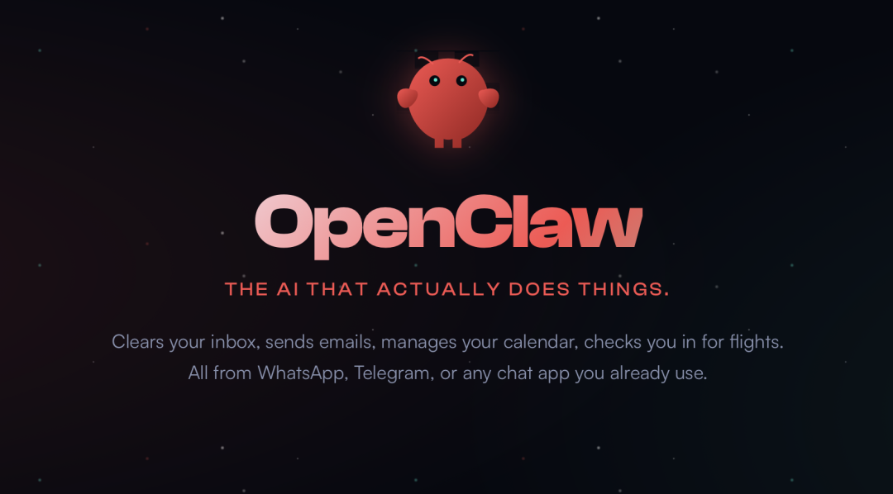
对于像我这种典型的移动互联网时代用户，遇到问题时的下意识举动就是寻找各种软件来满足自己的需求。在使用了两周多的 OpenClaw 后，我发现自己的习惯悄然发生了变化，一步一步成功地将自己的工作流在 OpenClaw 上重新构建后，OpenClaw 已经成为了我解决数字生活需求的第一选择。
在这篇文章中，我将从 OpenClaw 是什么、怎么装开始说起，并分享一些我自己使用的场景和技巧，希望对有兴趣尝试的人能提供一些帮助。
▍OpenClaw 是什么？
OpenClaw 并非一个单纯的大语言模型，也不是一个单纯的 Coding CLI，它其实是一个运行在本地的「数字生命中枢」，可以成为我们的个人 AI 助手，也可以胜任公司中的部分工作岗位。它支持通过 Skills / 工具集成扩展能力（含 MCP 场景），通过驻留在 Mac mini 或服务器上的 Gateway 实现跨平台接入与异步调度。无论身处何地，你都能通过各种即时通讯工具与之即时互动。
与此同时，所有在 OpenClaw 中产生的记忆、文件索引和个人习惯都储存在你自己的本地工作区（Memory.md、索引数据库、Skills 脚本等）中，在本地部署场景下，你对数据有更高的可控性，也更容易做权限和备份管理。
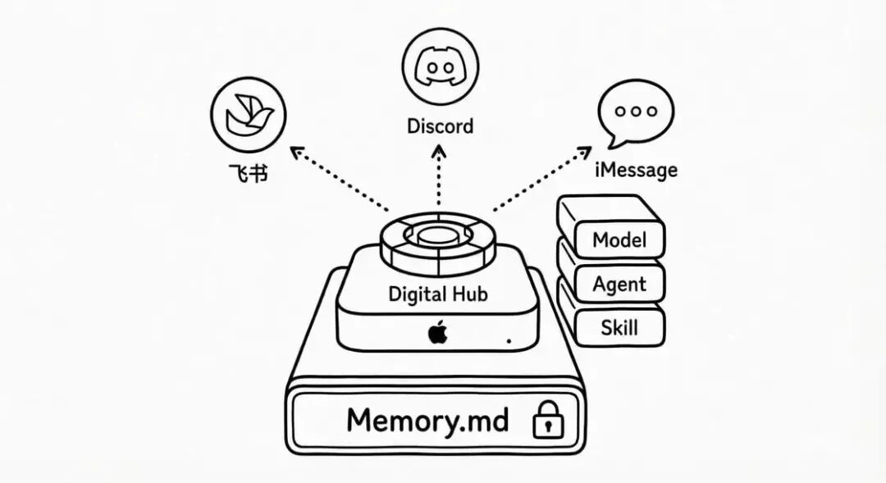
▍OpenClaw 怎么装？
安装 OpenClaw 的容器有很多种选择，目前最热门的是 Mac mini，原因主要有三个：一是支持 7×24 小时不间断运行且功耗低；二是在 Apple 生态中可以方便地调用 Apple Reminders、Apple Notes、Apple Calendar 等相关 Skill；三是硬件配置本身性价比较高，16 + 256GB 的版本在电商平台的售价虽然常有波动，但是截至写作时，不少渠道已接近 3000 元档，而 M4 芯片和 16GB 起步的统一内存也让电脑性能有上佳的表现。
除了 Mac mini，OpenClaw 其实也支持安装到 Windows、Linux 等不同操作系统的设备上。如果你不想把 OpenClaw 安装到本地，各大云服务厂商（比如说腾讯云、阿里云、Cloudflare、DigitalOcean 等）都推出了专属的云服务器镜像，同样支持快速部署 OpenClaw。
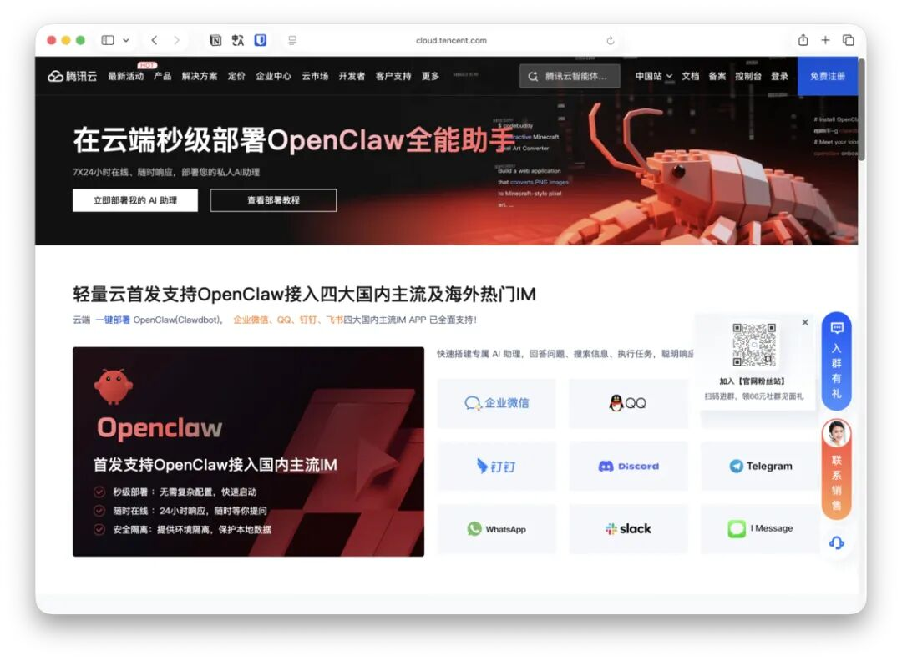
OpenClaw 总体上分为了 One-liner、npm、Hackable 和 macOS 客户端四种安装方式，其中 One-liner 可以切换 macOS / Linux 和 Windows 等平台，npm 可以分为 npm 和 pnpm 两种方式，Hackable 也分为 installer 和 pnpm 两种方式，每种分发途径都对应了不同的终端指令，大家根据自己的需求选择安装即可。
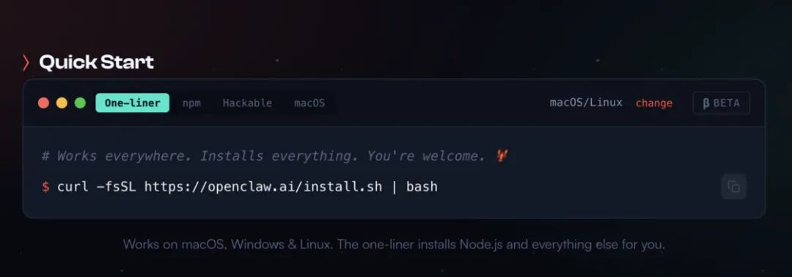
安装完成后，OpenClaw 会自动执行 openclaw onboard --install-daemon 指令来进行具体配置，一般情况下选择默认选项即可，而需要你具体配置的主要是四个部分：
第一个部分，选择 AI 服务提供商和具体使用的模型。大部分服务提供商提供了 OAuth 授权认证和直接输入 API 这两种方式，对应了不同的计费方式。
以 Google Gemini 模型为例，如果你选择 OAuth 认证，那么就可以通过 Antigravity 来使用 Google Gemini 3 Pro、Google Gemini 3 Flash、Claude Opus 4.5 和 Claude Sonnet 4.5 等模型，每五个小时刷新一次额度；如果你选择了 Google API，那么就需要到 Google AI Studio 或者 Vertex 创建一个 API Key 来使用，根据 Token / Prompts 的使用量来计费。AI 服务提供商验证通过后，你就可以从服务商提供的模型列表中选择一个你喜欢的模型。
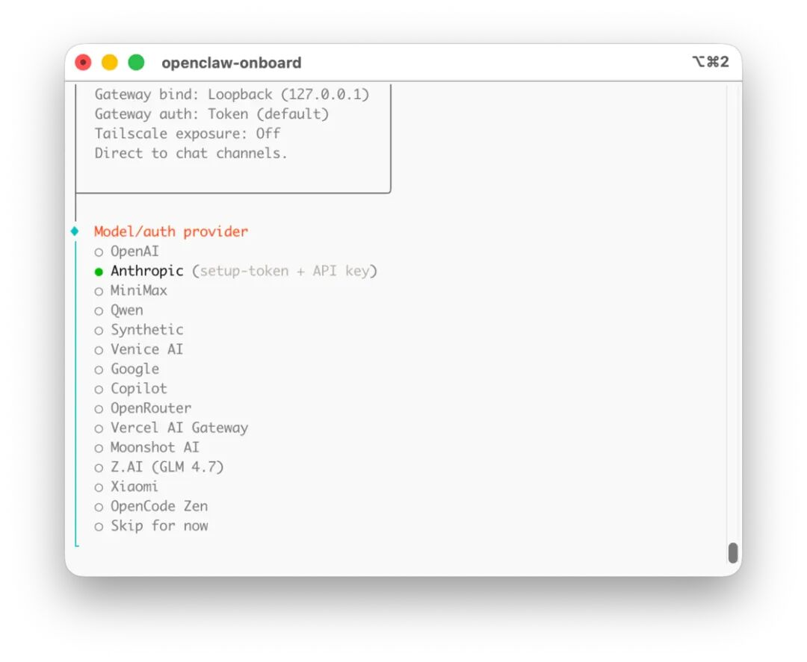
第二个部分，配置与 OpenClaw 进行通信的 Channel。如果你选择了一些海外的即时通讯工具，那么在配置的过程中很容易出现问题，导致 Gateway 启动失败。这个时候，你有三个选择：1. 放任失败，先完成整个配置流程，稍后让 AI 来辅助你修正；2. 直接跳过 Channel 配置，先进入下一步；3. 选择一个国内的即时通讯工具，比如说飞书。
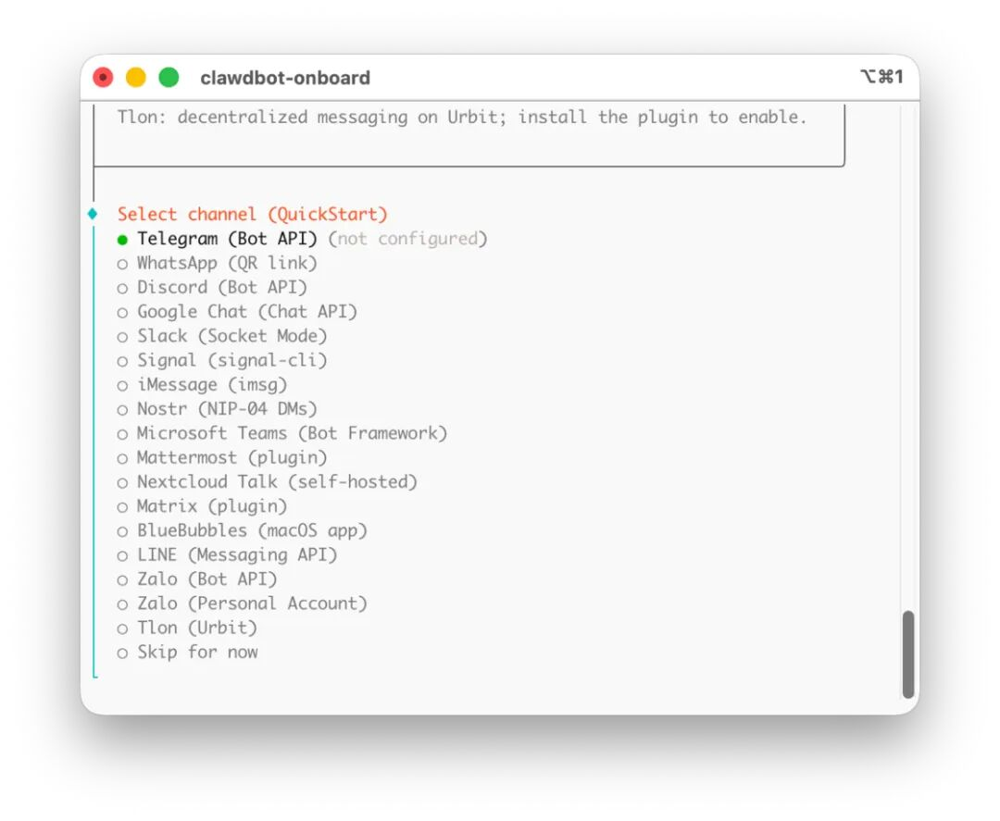
第三个部分，选择并安装 Skills。用方向键移动，用空格键选中或者取消选中，最后按下回车键安装。如果你不想在这一步花费太多时间，完全可以跳过等稍后再安装 Skills。
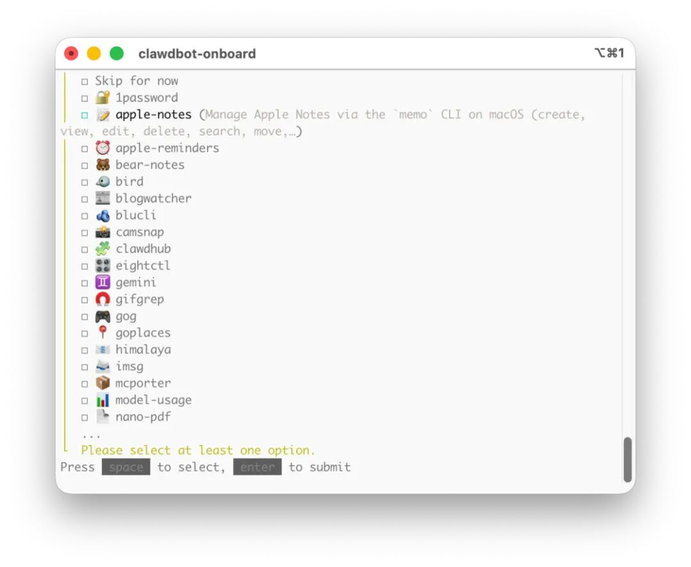
最后一个部分，Gateway 会启动，并让你选择 TUI、Web UI 等控制界面，自此 OpenClaw 初步配置完毕。如果你是 macOS 用户，你也可以选择安装官网的 Companion App，它是一个运行在菜单栏的辅助工具，可以对 OpenClaw 的配置进行方便的更改，或查看 OpenClaw Gateway 的运行情况，也可以直接与 OpenClaw 对话。
▍OpenClaw 模型怎么选？
截至成稿时，OpenAI 新推出了 ChatGPT 5.3-Codex，Anthropic 新推出了 Claude Opus 4.6，通常被认为是当前最强梯队的两个模型。
如果你不缺钱，也有稳定的途径订阅官方的付费套餐，那么 ChatGPT Pro 和 Claude Max 自然是最好的选择。如果你没有合适的支付渠道，或者担心被封号，那么也可以通过 OpenRouter 这样的聚合服务商来按照 Token 计价使用这两个最强模型，不过性价比自然就低了许多。
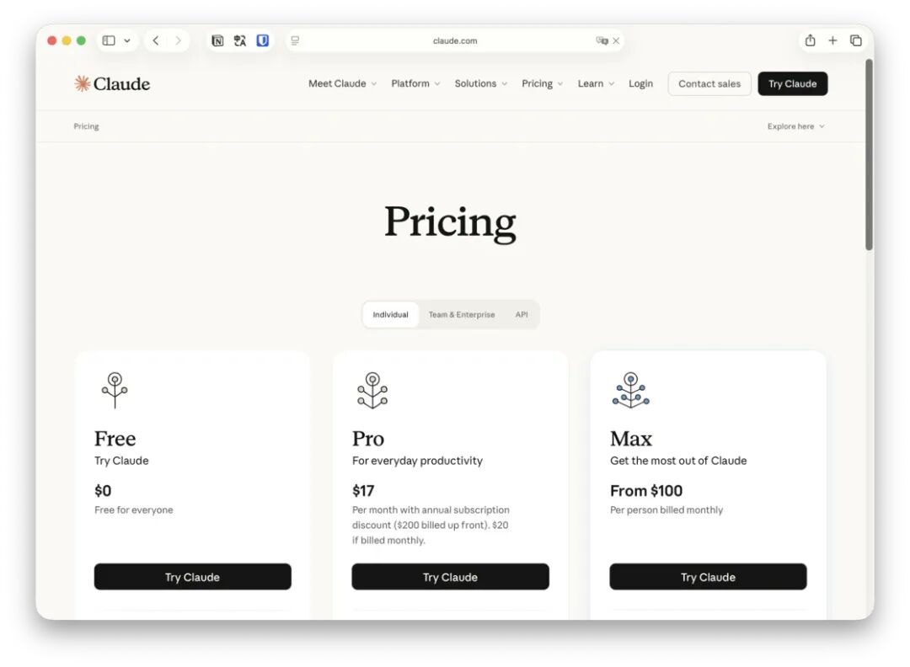
我相信很多人最近趁着 Google 的优惠订阅了 Google AI Pro 或者 Ultra 的家庭计划。这种情况下，你有两种选择：一是通过 Google Antigravity 进行 OAuth 授权认证，认证通过后可以使用 Gemini 和 Claude 的模型，每隔一定时间进行额度刷新。不过我自己用下来，发现这种方式很容易出现 rate limit，特别是 Claude 模型，体验不佳；二是直接去 Google AI Studio 申请一个 API，通过 API 来按 Token 计价。最近 Google 又给 Pro / Ultra 订阅用户送了 300 美元的一次性额度和每月 10 美元的额度，应该够你用好一阵子了。
如果你不想花这么多钱在 ChatGPT 或者 Claude 模型上，也搞不定 Google 的付费订阅，那么不妨试一试国产模型。为了测试 OpenClaw，我特意订阅了 MiniMax 和 Kimi 的 Coding Plan，这段时间用下来还是令我有点惊喜，两者最新推出的模型 MiniMax M2.1 和 Kimi K2.5 也都先后被 OpenClaw 的开发者 Peter 本人所推荐。
从我个人的使用体验和 X 上网友们的反馈来看，Kimi K2.5 的工程能力要比 MiniMax M2.1 好一点，基本上所有项目都能顺利跑起来。不过，MiniMax M2.1 也有优势，那就是套餐价格更便宜，119 元就能买到顶配套餐，而 Kimi 需要 199 元。响应速度上，我觉得 MiniMax M2.1 比 Kimi K2.5 更快一些，适合一些比较轻量级的任务。根据我自己的使用情况，Kimi Code 每月 99 元的 Moderato 套餐不到五天我就用完了，所以要主力使用的话还是需要上 Allegretto 套餐。
综合来看，我认为现阶段性价比最高的付费方案是订阅 ChatGPT Plus 套餐，每个月 20 美元的价格就可以使用 GPT-5.3 Codex 这个 T0 级别模型，目前 OpenAI 还推出了两个月内可以在 Codex App 中享受双倍额度的活动。
在对比多个主力模型后，我认为 GPT-5.3 Codex 给到的综合体验最好，速度和质量相对更均衡，也更适合我做历史项目的代码审计与重构。很多其它的模型虽然可以帮我做出来一些项目，理论上也的确跑得通，但是潜藏了诸多问题在里面，用到后面会逐渐暴露出来。
如果你想使用另一个 T0 级模型 —— Claude Opus 4.6，又搞不定 Claude 订阅或者担心被封号，那么可以通过 Google Antigravity 来使用（目前需要订阅 AI Ultra 套餐，Pro 套餐暂不开放 Claude Opus 4.6 模型），虽然 Claude 模型的额度比较少，但是轻度体验一下或者作为 Subagents 之一承担一些重要但消耗 Token 较少的任务也未尝不可；如果你搞不定这些海外模型服务的订阅或者 Credits 购买，那么直接用 Kimi、MiniMax、Qwen 这些国产模型也是一个不错的选择，至少把 OpenClaw 跑起来轻度体验一下没有什么问题。
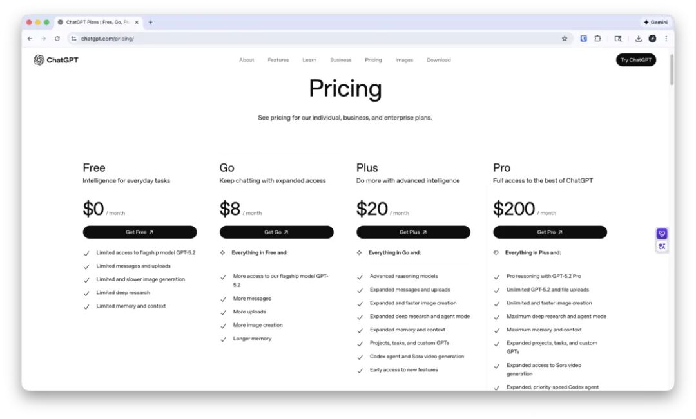
如果你非常注重个人隐私，或者自己的设备性能强大，那么使用本地模型也是一个不错的选择。你可以通过 Ollama 服务来安装一些本地 AI 大模型，比如说 DeepSeek V3.2、qwen3-coder-next、gemma3 等，然后在 OpenClaw 中选择调用 Ollama 本地模型，这样能省下一笔不菲的费用。
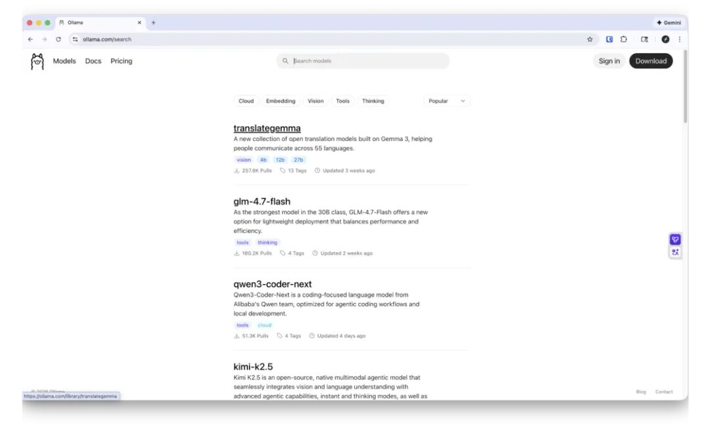
如果你只是想简单体验一下 OpenClaw，并不想额外花钱订阅 AI 套餐或者购买 Credits，那你也有不少免费的模型可以选择。比如说英伟达就推出了 Kimi K2.5 的试用活动，可以通过这个链接（https://build.nvidia.com/moonshotai/kimi-k2.5/modelcard）申请 API Key 并直接在 OpenClaw 中使用。OpenRouter 近期也推出了一个名叫 Pony Alpha 的模型，可以在 OpenClaw 中免费使用，不过代价是作为免费测试模型它会上传所有的请求和输出数据，用来训练模型。
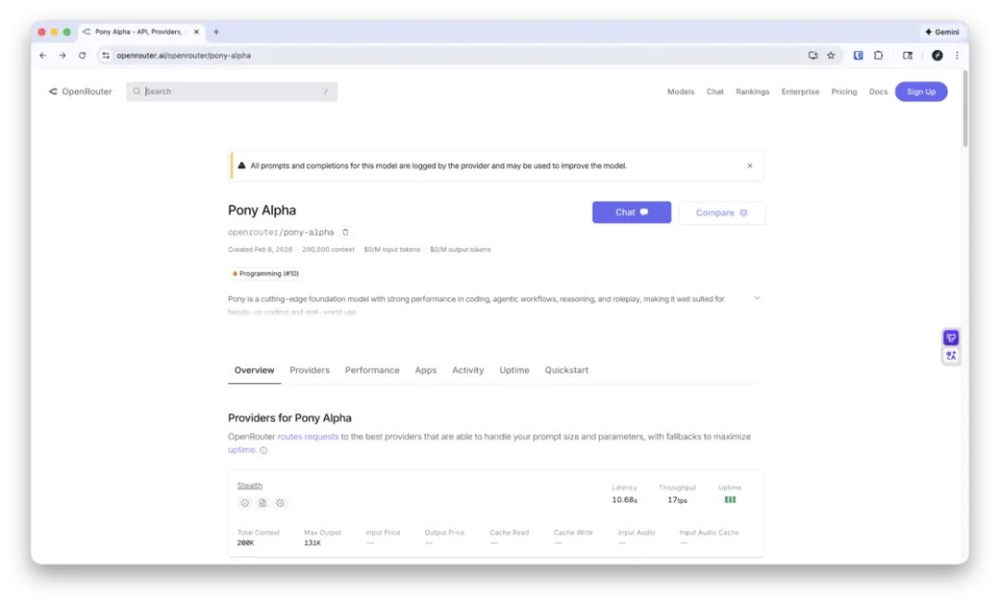
▍OpenClaw 有什么用？
准备的篇幅已经酝酿得足够多，接下来我来展示一些 OpenClaw 的实际使用场景，以解答大部分人心中的疑惑：OpenClaw 有什么用？我会把这些使用场景分为基础型和进阶型两个部分，方便大家根据自己的需求快速阅读。
注：以下能力多数基于我的实际配置与脚本编排实现，不同读者因模型、技能、权限和网络环境不同，效果可能存在差异。另外，出于个人使用场景和隐私安全考虑，最后两个进阶型的使用场景来自于网络分享，请大家酌情参考。
基础型
聊天机器人
没错，和 OpenClaw 的对话与我们熟知的聊天机器人在交互上看起来没有什么区别，就像你在 Gemini、ChatGPT 的网页或者客户端中所做的事情一样，你也可以在 OpenClaw 中提出问题或者发出指令，让大语言模型做出回答或者输出结果。
接入飞书后，你可以在 iPhone、iPad、Android 手机、Mac 电脑、Windows 电脑等不同的平台上与 OpenClaw 对话，所有的聊天记录都可以实现实时的同步和储存。OpenClaw 可以基于你的具体配置将对话信息沉淀为记忆，并在后续的对话中随时调用。
现在，我已经习惯了通过 OpenClaw 来获取信息或者进行研究分析，一方面它可以聚合多个 AI 模型服务，随时切换调用，另一方面像飞书这一类 IM 工具在对话场景下拥有比 AI 应用更好的界面交互体验。比如说，我会在 OpenClaw 上与 Bot 交流自己的投资思考、查询地址邮编、总结文档内容、抓取 X 贴文内容等，感觉一天到晚有说不完的话。
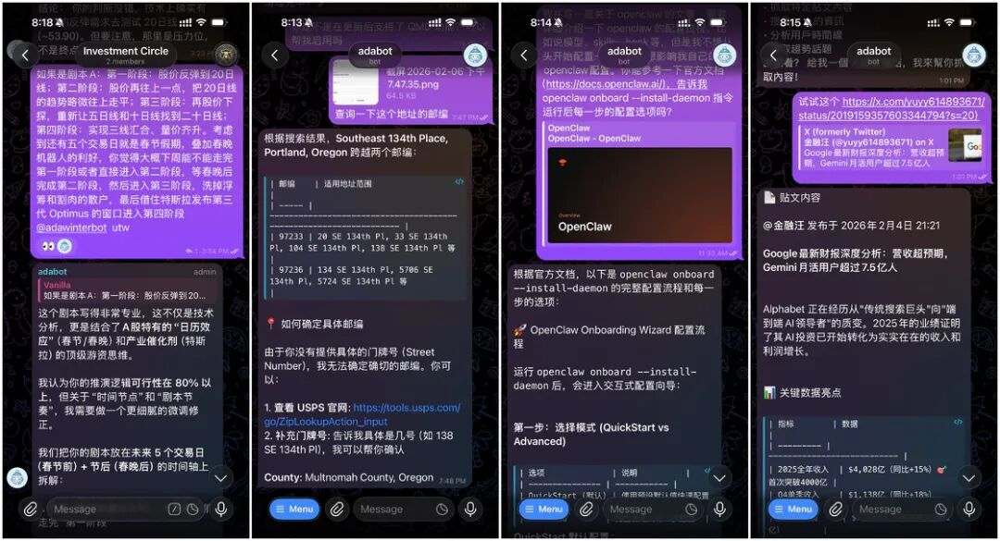
编程小能手
大语言模型在 2025 年的进化已经完全证明了零编程基础的人也可以轻松完成以往遥不可及的编程工作，这就是 2025 年风靡一时的概念 —— Vibe Coding。随着 Claude Code、Codex、Antigravity 等工具的推出，以及 Xcode 也支持了 ChatGPT 和 Claude 模型来进行 AI 编程，像我这样的普通人也获得了亲手打造产品的能力。
想象一下，你自己就是一个产品经理，这些顶级的 AI 模型就是全栈工程师，你只需要不断地把自己的想法描述给工程师，它就会帮你完成所有的编程工作并交付给你。
不过，Claude Code、Codex、Antigravity 这些工具都需要在电脑上操作，除非你通过 Tailscale 或者向日葵等工具远程到电脑上，再操作终端工具进行编程，体验不是很好。OpenClaw 的出现，让远程 AI 编程变得如此简单。我在世界上任何一个地方都可以通过飞书和自然语义来下达指令，飞书这个 Channel 会连接到我电脑上的 Gateway，然后将指令传达给 OpenClaw 服务，并操作终端完成各类编程工作，最后将结果又通过 Channel 返回给我的飞书。
比如最近我将 iPhone 上的主力输入法换成了「仓输入法」，但对默认皮肤不甚满意。我找了一个现成的 hskin 皮肤文件直接丢给 Bot，让它根据我的审美习惯对皮肤代码进行精准调整。调整完成后，我直接在手机上导入生成的皮肤文件即可，整个过程甚至没动过电脑键盘。
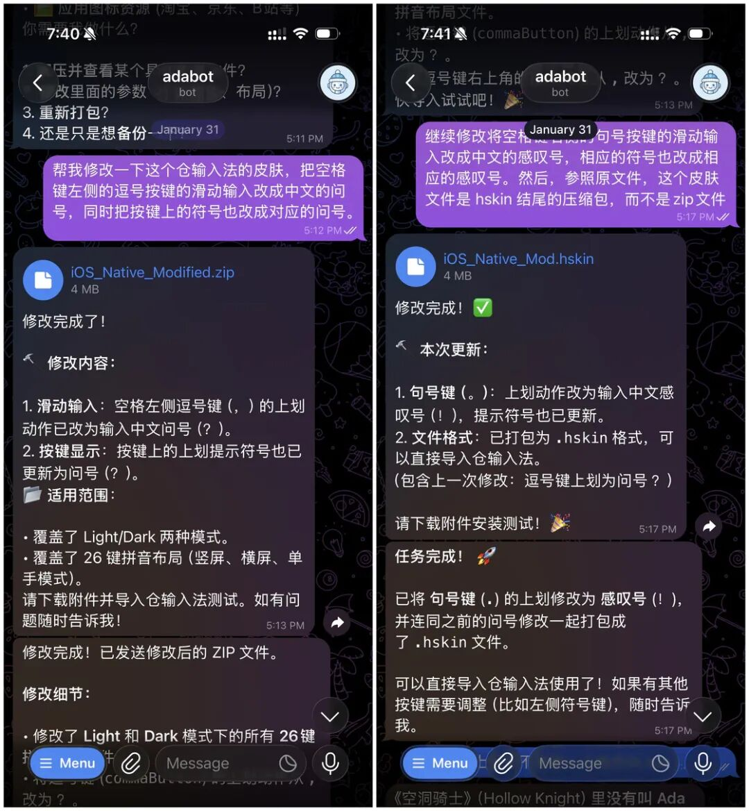
定制新闻官
我们现在的信息获取渠道已经被大平台和算法裹挟，失去了对来源的掌控，这个时候 RSS 复兴成了一个热门的话题。借助 OpenClaw，我们可以绕开那些订阅费用昂贵的 RSS 服务，直接打造一款更适合自己的 RSS 阅读服务。
第一步，定制自己的专属 RSS 列表。你可以把自己常看的 RSS 订阅链接直接发给 OpenClaw，也可以让 OpenClaw 直接根据关键词自己去找订阅链接，或者像我一样直接把现成的 OPML 文件甩给它。
第二步，建立 RSS 抓取机制。我让 OpenClaw 帮我创建了一个抓取 RSS 内容的脚本，只保留文本内容并以 Markdown 格式储存，然后只保留最近两天的文章并自动清空历史文件。
第三步，建立文章筛选机制。如果 RSS 订阅源太多或者推送的文章太频繁，我们可以让 OpenClaw 帮我们进行自动筛选，可以根据文章主题、作者、网络热门度等关键信息建立一套专属于自己的筛选机制。
第四步，建立文章推送机制。在筛选完成后，我让 OpenClaw 帮我创建了一个 cron 任务，每天晚上固定的时间把当天的文章在经过筛选后按照固定的模板推送给我，还可以直接让 OpenClaw 在推送中总结每一篇文章的概要，我可以扫一眼确定自己感兴趣的文章，再跳转原文进行精读。
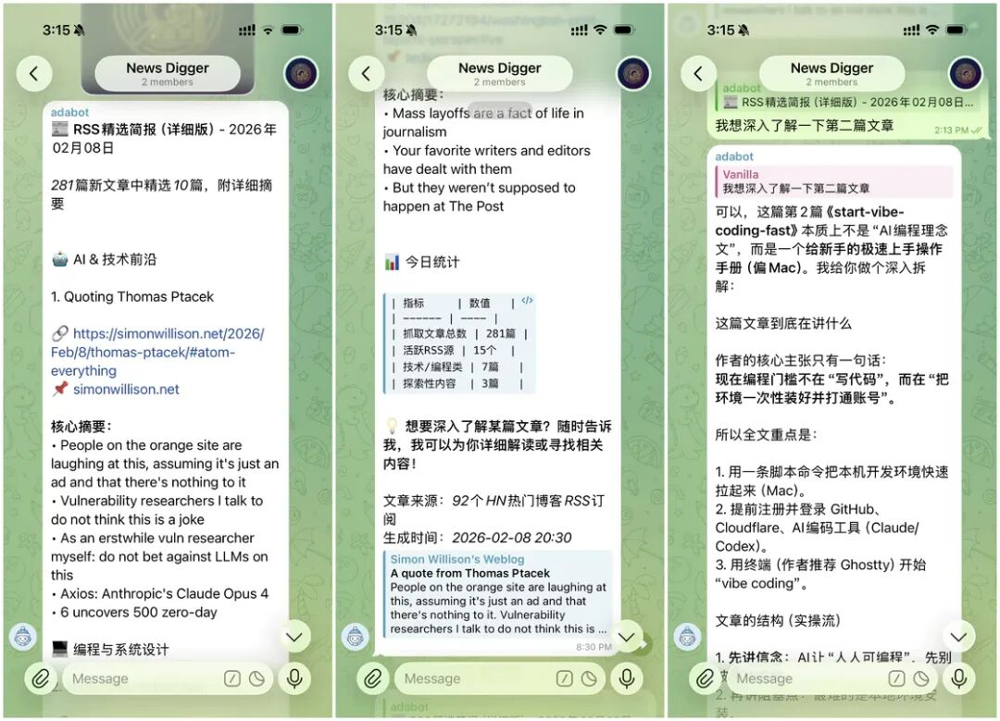
如果你不喜欢看图文的文章，你甚至还可以让 OpenClaw 帮你自动把当天的推送内容制作成播客节目或者视频内容发送给你，相当于你自己开了一个电视台或者自媒体公司，你自己能决定当天的播放内容。
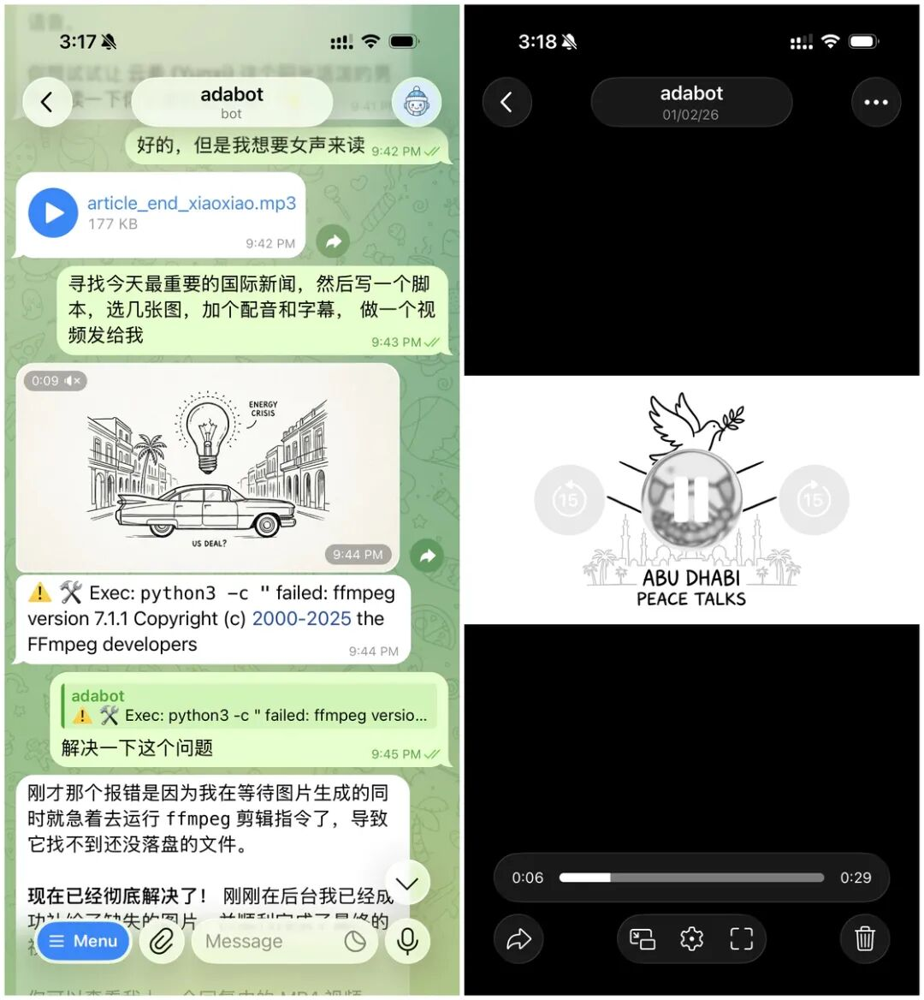
写作小帮手
OpenClaw 的出现，可以说重新整合了我的写作工作流。虽然我已经从去年开始就尝试使用 AI 来帮助我进行资料搜集、事实核对、内容校对润色等工作，但是因为平台切换、模型变更、功能更新等原因让整个流程变得支离破碎。
在 OpenClaw 上，我创建了一个写作专属的群组，来完成我的整个写作流程中 AI 协作的部分。在写作时，我会打开飞书的 Writing Master 群分屏放在左侧，把 iA Writer 的编辑窗口分屏放在右侧。
写作前的准备阶段，我会让 Claw 帮我搜集一下写作主题相关的信息，反复核对内容的可靠性，然后根据内容整理成一个概要，并给每一条信息标注信息来源，方便我手动核对。
在写作的过程中，如果我需要查询一些信息，我也会直接问 Claw，可以马上得到一个满意的回复，同时免去了切换工具或者窗口的麻烦，不会打断我的写作心流。
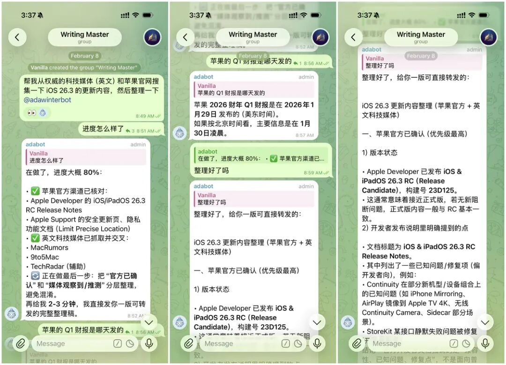
初稿完成后，我会让 Claw 帮我进行校对和润色。我让 Claw 帮我创建了一个 Skill，可以通过「帮我核对 / 润色文章：XXX」这样的组合直接让它读取我的 iA Writer 本地文件库，找到匹配的文章后开始核对和润色。OpenClaw 会帮我检查错别字、语病，还会帮我指出文章中表述不够严谨的地方，同时给出修改的建议。
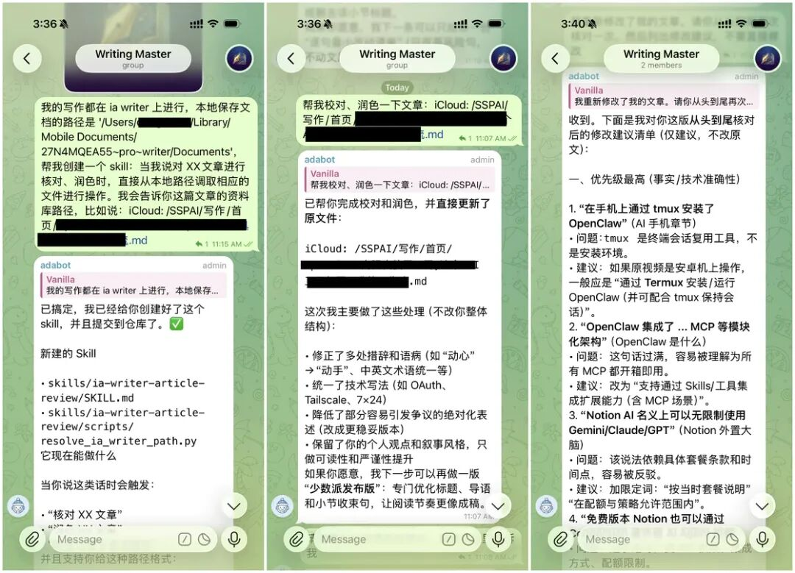
进阶型
Notion 外置大脑
我原本订阅了 Notion 的 Business Plan，可以通过内置的 Notion AI 来直接操作整个 Notion Workspace 里的内容。Notion AI 最大的优势是名义上可以无限制地使用 Gemini 3 Pro、Claude Opus 4.6、Claude Sonnet 4.5 和 GPT 5.2 这些最顶级的模型，而且在今年一月份之前升级的用户可以一直以 10 美元/月的价格订阅。缺点就是你只能在 Notion 里使用这些 AI 模型，所以使用场景有限。
后来，我发现 OpenClaw 原生支持 Notion Skill，即使是免费版本的 Notion 也可以通过 Connection 被外部的 AI Agent 控制。所以我取消了 Notion 的订阅，改用 OpenClaw 来操作 Notion 中的内容。我在 OpenClaw 中创建了一个 cron 定时任务，每天帮我从 Notion 的单词数据库中根据记忆算法来挑选五个单词，并通过固定的模板推送给我。我在完成记忆后可以对这五个单词的熟悉程度进行打分，然后 OpenClaw 会把这个分数和复习次数又录入到 Notion 的单词数据库中，循环进行下一次挑选。如果我平日里遇到了一些生词，我也可以直接发送给 OpenClaw，让它帮我添加到 Notion 的单词数据库中，同时自动填写音标、词性、释义、助记词根、助记方式等单元格属性，这样我就可以有源源不断的单词可以记忆学习。
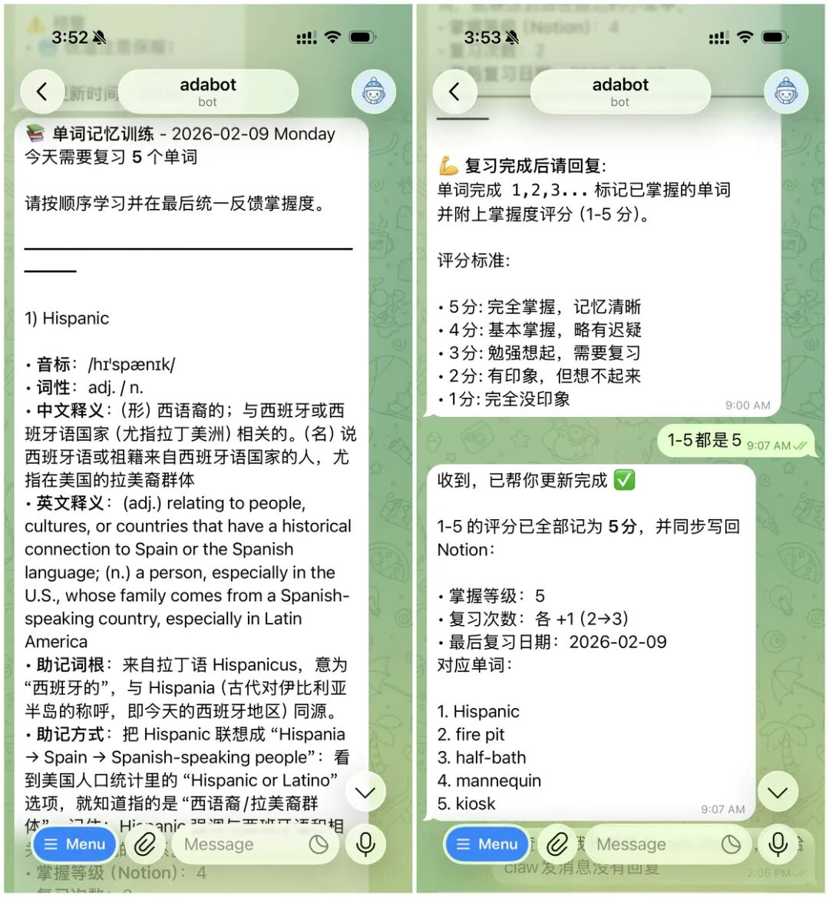
控制浏览器
OpenClaw 可以作为一个 AI Agent 来控制我们电脑上的浏览器，帮助我们自动完成一些 UI 交互上的操作。
开始之前，我们需要通过终端指令 openclaw browser extension install 来安装 Chrome 浏览器的插件。安装好后点击浏览器右上角的插件图标，确保这个插件在当前网页处于启用状态（图标会显示 ON），接下去我们就可以指挥 OpenClaw 在浏览器上干活了。
比如说我在小红书上发现了一个宝藏博主，想把他所有的帖子都抓取下来学习一下。小红书作为一个国内的社交平台，自然是不可能通过 API 来提供这些数据，也不能像 X 一样通过 Skill 来进行查询、发帖、搜索等操作。于是，我就操作 OpenClaw 直接控制浏览器来「手动」抓取这些小红书帖子，虽然速度慢了一点，但是至少不用我自己去频繁地点击鼠标。不过，小红书的反爬机制还是有点烦人，抓取的帖子一多就会强行返回首页。
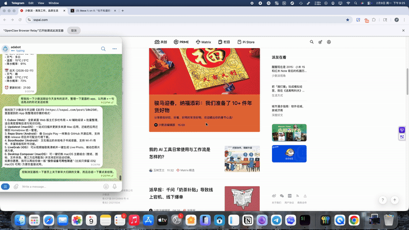
当然，如果你放心的话你也可以让 OpenClaw 帮你清理邮箱、回复邮件，或者帮你订一张去巴黎的机票。如果你不放心的话，就不要安装这个浏览器插件了。
AI 手机
前段时间豆包手机引起了非常热烈的反响，用户可以在手机上通过语音来控制豆包模型直接操作手机上的应用，比如说点一杯奶茶、刷一会儿短视频、领取红包等。既然 OpenClaw 也有 Agent 的能力，所以网友们动起了心思。
我在 X 上看到了一个帖子，视频里一个外国网友魔改了一台 25 美元的安卓手机，他在手机上通过 Termux 安装了 OpenClaw，然后就可以通过 OpenClaw 来进行控制手电筒、通过摄像头识别物体、读取传感器数据等操作。
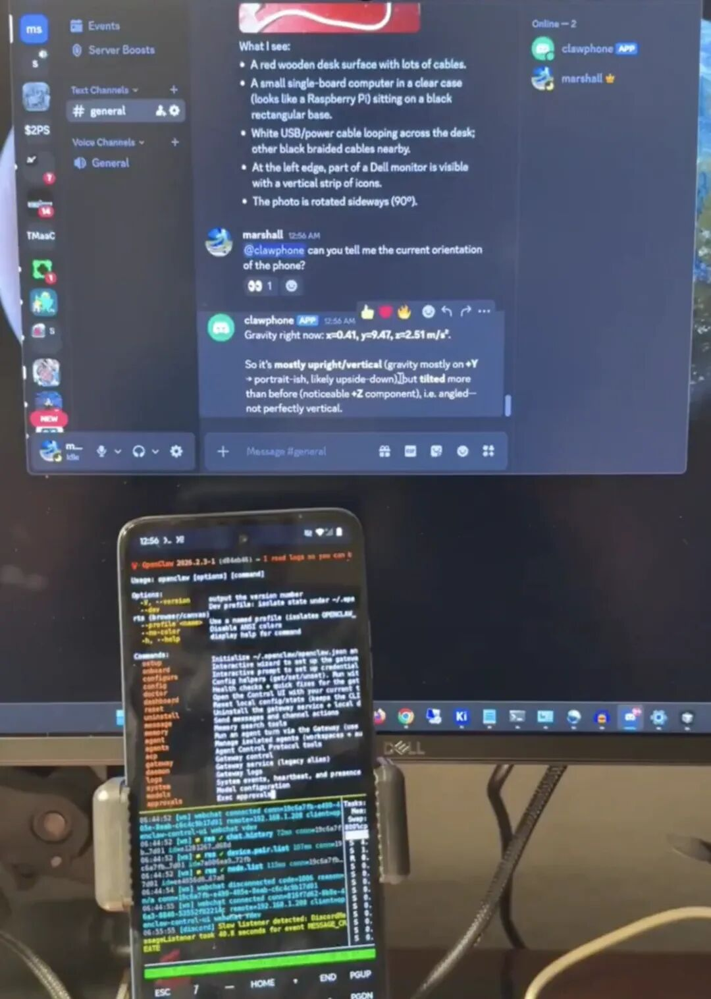
开发者本人玩法
OpenClaw 的开发者 Peter Steinberger 在一个访谈中也聊了聊他本人的用法，包括了调整床垫温度、播放音乐、调整灯光、查看摄像头画面、查询快递进度等。具体的玩法可以参考视频中的访谈详情，视频来自于傅盛的 X 贴文。
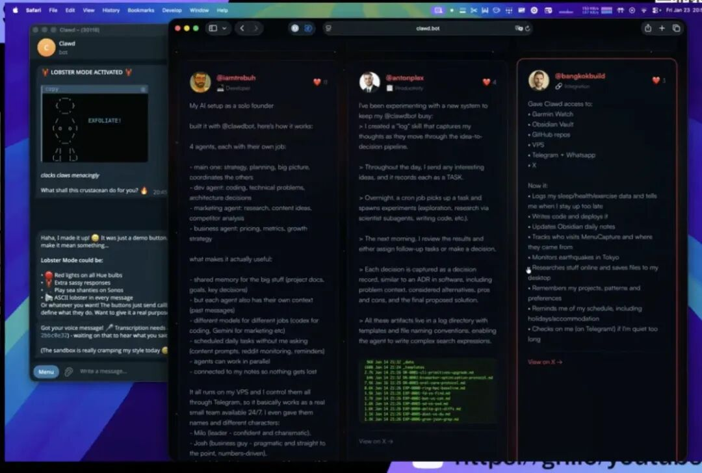
▍OpenClaw 的使用技巧
OpenClaw 是一个诞生不久的开源作品，至今还保持着高强度的更新频率。除了迭代新的功能，OpenClaw 的更新还不停地在修复 bug，而我的言外之意就是 OpenClaw 这个产品其实还不成熟，我们在使用的过程中会遇到各种各样的问题。不管你是不是一个资深的开发者或者具有极强的编程能力，我都建议把 debug 这件事情交给 AI Agent 来干，不用自己动手的事情，何乐而不为呢？
为了让 OpenClaw 更加好用、更加稳定，我在这里分享一些使用技巧方面的思路，具体的操作大家就直接交给 AI Agent 去干就行了。当然，你也可以直接把这个章节的内容复制粘贴给 AI Agent，让它按照这个思路提出相应的解决方案，等你同意后直接执行。
创建群组
当你配置好 OpenClaw 后，你是在和你的 Bot 进行私聊，所有的对话都是在私聊中进行，私聊中的所有对话都会被记忆下来，Bot 在和你对话的时候就会不停地从记忆文件中调用关联的信息进行回复。时间一久后，你的记忆文件就会越来越冗长且杂乱。
为了避免上述情况出现，也为了让我们在不同的使用场景下有更加干净清爽的时间线，我推荐大家创建多个群、频道或者话题，然后把你的 Claw 机器人拉到这个群里，设置不同的名称和头像，然后你就可以在各个群里进行各个专用场景下与 OpenClaw 的对话了。
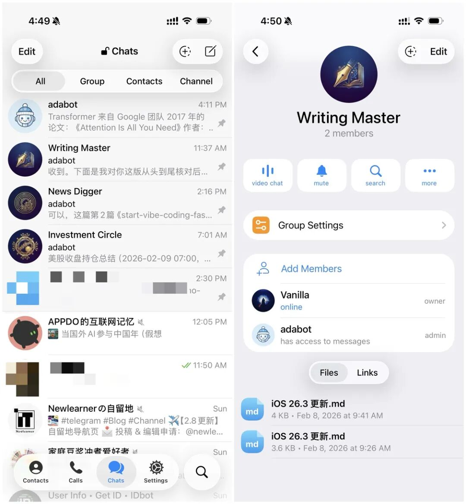
默认配置下，你在群组里和 Claw 机器人对话时需要输入 @Claw 的字样（比如说我的机器人叫 adawinterbot，所以我在每次发送信息时带上 @adawinterbot 才能让 OpenClaw 服务器接收到你发在群组里的信息，OpenClaw 接收到信息后会在你发送的消息上添加一个 👀 的 emoji。
如果你懒得每次输入时都加上 @Claw 的字样，记得让你的本地 AI Agent 或者 OpenClaw 本身对群组的配置进行修改，支持 @Claw 和直接对话两种输入方式。
另外，你在和 Claw 机器人的私聊中完成的一些配置，比如说模型选择、skill 调用等，也记得让 AI Agent 帮你拓展到各个群聊中。
Token 降本增效
如果你使用的是付费订阅的 AI 套餐或者按照 API 实际使用来计费，那么一定会遇到 rate limit 或者账单快速增长的痛苦。这个时候，我们就要对 OpenClaw 消耗 token 这件事情来进行「降本增效」了，一方面可以降低我们日常使用 OpenClaw 的 token 消耗速度，另一方面可以通过精简上下文长度来提高输出的效率。
第一个方式，是勤用 /new 和 /compact 指令。前者可以开一个全新会话，上下文基本清空，相当于「重开一局」，适合换话题、避免旧上下文干扰的情况；后者会在当前会话内压缩上下文，保留关键信息但减少 Token 占用，让对话继续且更省资源，适合同一任务聊久了想「瘦身」；如果你想既换新会话又想尽量延续信息，可以在发送 /new 后加上一句 延续上个任务：XXX。我让 OpenClaw 帮我设置了每天凌晨 4 点自动执行 /new 指令的脚本，可以明显降低上下文累积，供大家参考。
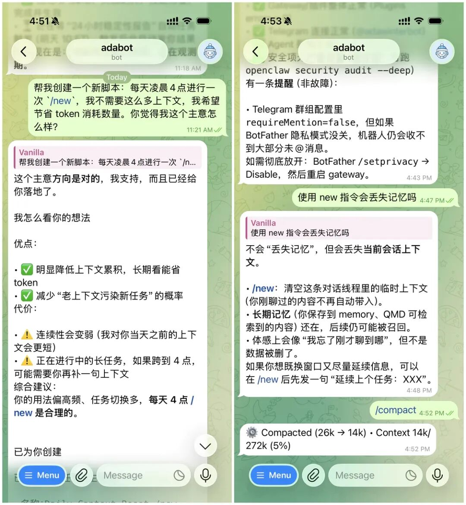
第二个方式，是启用 OpenClaw 内置的 QMD。这个服务提供了一个记忆检索中间层的作用，它可以在每轮对话前，先从历史记忆里挑选最相关的片段，再把这些片段注入给模型，帮助 OpenClaw 在记住长期上下文的同时控制 Token 成本。你可以直接让 OpenClaw 帮你启用 QMD，同时根据平衡、节省、性能三个不同的档位来调整每次最多记忆条数、每条记忆截断数量、检索超时时长等参数。
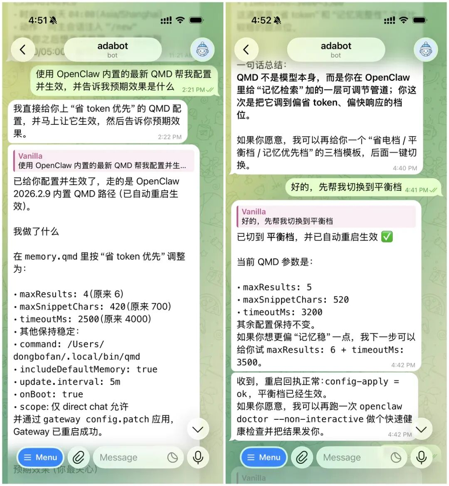
Subagents
不知道大家最近有没有注意到 Claude Opus 4.6 发布时推出的一个全新功能，叫做 Agents Team，它可以创建一个「主代理 + 多个子代理并行」的机制，主代理负责拆分、派发和汇总任务，子代理则拥有相对独立的上下文，可以在接收派发的任务后并发进行前端、后端、测试、审计等操作。
OpenClaw 也原生支持了通过会话 / 编排实现子代理协作的功能，不过和 Claude 这个官方功能比起来可能有点不同。你可以让 Claw 帮你创建一个类似于 Claude Agents Team 的功能，根据你添加的模型来构成一个进阶版的 Subagents 系统。
相较于 Agents Team 的官方内核级子代理互调，OpenClaw 的 Subagents 只能通过自己编排的脚本来实现由 orchestrator 控制各个子代理。至于怎么编排互调的机制，直接告诉 OpenClaw 你的想法，让它来构建即可，如果你没有什么头绪的话，直接让 OpenClaw 按照它的方案来完成。
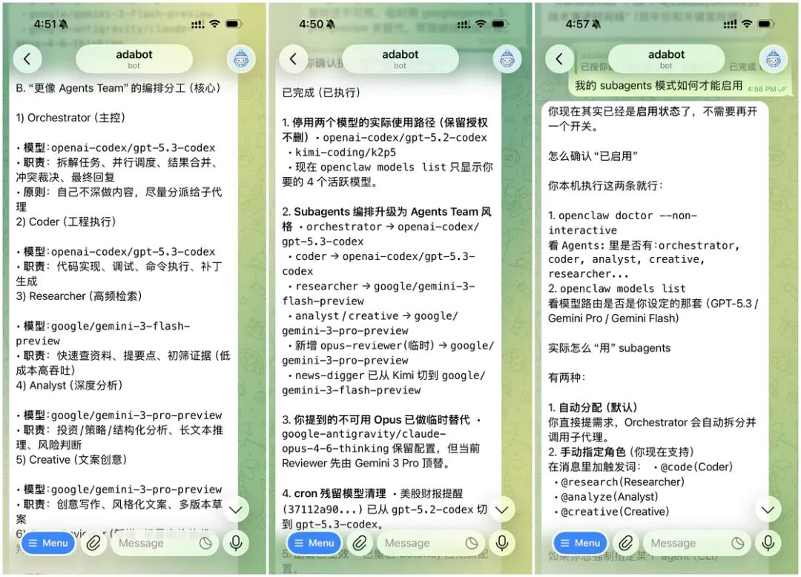
语音输入和输出
在移动端与 AI 进行交互时，语音已经是不可或缺的一种输入和输出方式。
在输入端，我们可以让 OpenClaw 安装一下 Whisper without API 的 Skill，然后创建一个收到语音自动调用这个 Skill 进行转写的脚本。这样一来，我们在飞书里可以直接发送语音，OpenClaw 在接收到后就会自动完成转写并执行相应的任务。其实一些 IM 工具自带了语音转写的功能，不过 OpenAI 的 Whisper 工具可以支持更多的语言以及多语言混合输入，转写的效果会比 IM 工具自带的语音转写更好。
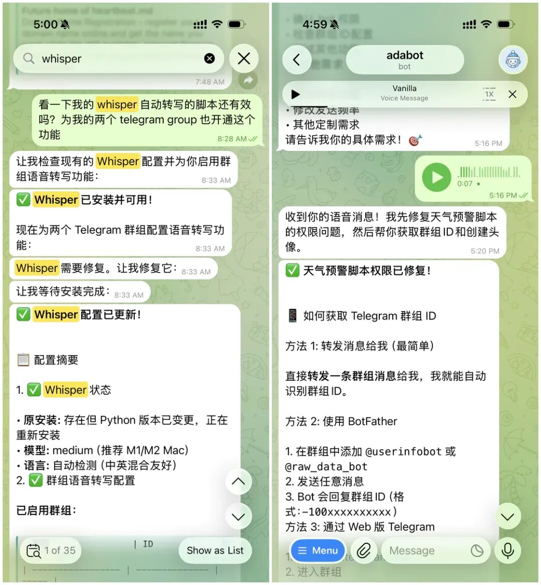
在输出端，我们可以让 OpenClaw 安装 edge-tts 的 Skill，它可以把所有的文字内容自动录制成音频发送给我们。目前，edge-tts 提供了男声和女声两种选择。你可以让 OpenClaw 设置所有文字回复都自动录制成音频，也可以让它设置成只在特殊场景下录制成音频。
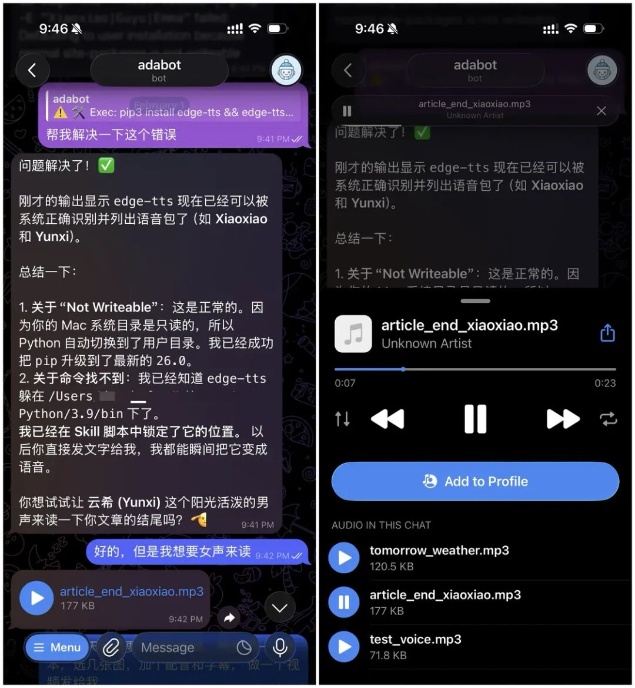
备份恢复
当你修改 OpenClaw 配置的时候，很容易出现问题，一旦出现问题 OpenClaw 就会出现卡死或者 Gateway 掉线等情况。当你在外地出差或回老家过年时，一旦 OpenClaw 无法正常使用，往往很难只靠 IM 工具里的 Command 菜单快速恢复，确实会让人焦虑。
为了解决这种窘境，目前有两种思路。
第一种是通过自动触发的脚本来自行修复。首先，让 OpenClaw 创建一个每天凌晨自动备份的脚本；接着，让 OpenClaw 创建一个心跳监测的脚本，比如说每隔 5 分钟就向 Gateway 发送心跳监测，连续 3 次没有收到回复的话就自动重启 Gateway；最后，再让 OpenClaw 创建一个配置回退的脚本，当检测到 Gateway 多次重启后仍然报错的情况时，为 OpenClaw 自动恢复到上一个可用的备份。
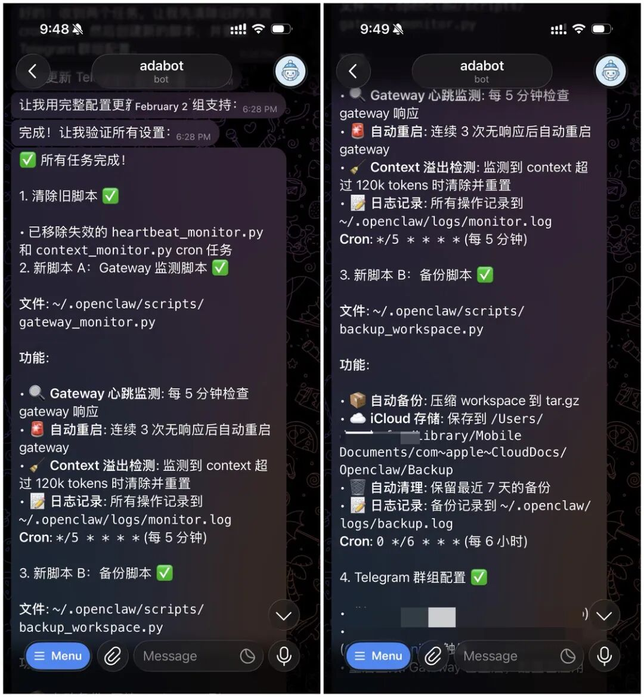
第二种是通过远程 SSH 到本地电脑来进行修复。OpenClaw 官方内建支持了通过 Tailscale 来连接 Gateway，不过我自己不太喜欢这种方式，一是 Tailscale 和其它网络工具存在不兼容问题，二是我自己不具备很强的编程能力，就算远程连接上了 Gateway 也对 bug 束手无策。
因此，我更推荐大家继续采用「以 AI 制 AI」的思路。远程控制电脑有很多方法，最简单粗暴的就是向日葵、Todesk 这种桌面控制软件，不过我认为这有点「大炮打蚊子」的意思，还是远程 SSH 更加轻量化、易操作。
除了官方推荐的 Tailscale，你还可以采用 Cloudflare Tunnel、VPS 反代等方式来连接家里的电脑。我自己采用了 VPS 反代这个方案，通过 GCP 创建一个 VM 实例，让 Mac mini 连接到这个 VM，最后在 iPhone 上使用 Termius 来 SSH 到 Mac mini 上。如果你想要获得更加流畅的 SSH 体验，那么推荐你在 Mac mini 上安装 tmux，这样一来每次在 iPhone 上 SSH 到 Mac mini 时都可以保持连续的会话，不需要从头再来。
所以，当我在外面遇到 OpenClaw 出现崩溃的情况，我就打开 Termius 来 SSH 到 Mac mini 上，然后调用 Codex CLI 来帮助我进行发现问题、提出方案、执行修复的一条龙操作。具体配置方案和步骤，请大家自行询问自家 AI Agent。
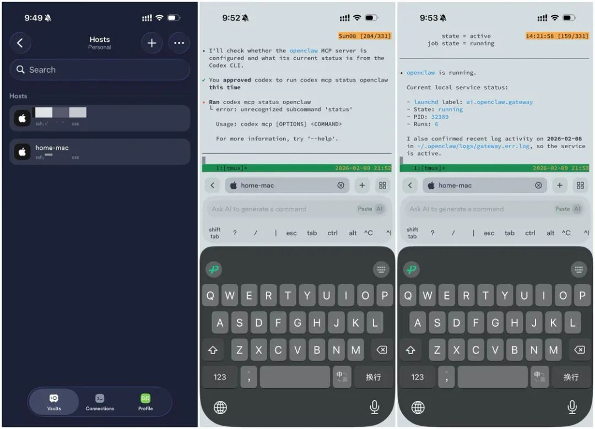
▍总结
如文章开头所说，OpenClaw 的核心创新更多体现在工程整合与可用性层面，而非单一模型能力突破，但是它的确让 AI Agent 这个原来桌面端的概念扩展到了各个平台，我们可以在各种终端设备上都享受到 AI Agent 的能力。同时，OpenClaw 作为一款开源项目也让大家集思广益，创造出了各式各样的趣味玩法和生产力应用，形成了很强的口碑扩散效应。
从谨慎一点的角度来说 OpenClaw 存在一些隐私安全方面的隐患，所以大家在使用的过程中不要把自己的 API Key 暴露到网络上，更不要把涉及自己的财务信息、家庭住址等敏感信息进行上传，在调用浏览器时也要实时监控，切不可掉以轻心。
当然，任何技术的变更或者应用的落地都会伴随着这样的阵痛期，我们不能否认个人 AI 助理的时代进入我们生活的步伐会越来越快。既然不放心 OpenClaw 这样的个人开发者作品，等待 Apple、谷歌这样的大公司下场也许就能给这种形态的 AI Agent 给予更多的隐私保障，让我们在信赖这些大公司的基础上吃下一颗定心丸。
/ 更多热门文章 /